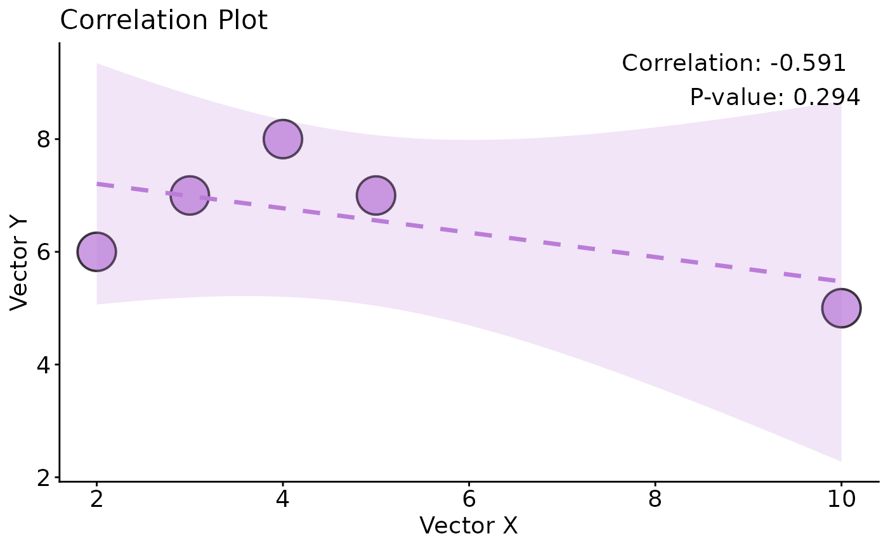

Draw Correlation between Two Vectors
correlation_draw.RdThis function creates a scatter plot to visualize the correlation between two vectors, displaying the correlation coefficient and p-value on the plot.
Usage
correlation_draw(
vector_x,
vector_y,
method = "spearman",
color_palette = "npg",
title = "Correlation Plot",
xlab = "Vector X",
ylab = "Vector Y",
point_size = 1.5,
point_color = "#BB7CD8",
point_stroke = 1,
alpha = 0.75,
line_color = "#BB7CD8",
line_type = "dashed",
line_size = 1.2,
ci_alpha = 0.2,
title_size = 16,
xlab_size = 14,
ylab_size = 14,
axis_text_size = 14,
...
)Arguments
- vector_x
Numeric vector.
- vector_y
Numeric vector of the same length as
vector_x.- method
Correlation method:
"spearman"or"pearson". Default"spearman".- color_palette
Character scalar or vector for color palette (kept for compatibility).
- title
Plot title. Default
"Correlation Plot".- xlab, ylab
Axis labels. Defaults
"Vector X","Vector Y".- point_size
Point size. Default
1.5.- point_color
Fill color for points (shape 21). Default
"#BB7CD8".- point_stroke
Numeric stroke width for point outline. If
NA, treated as0. Default1.- alpha
Point transparency. Default
0.75.- line_color, line_type, line_size
Trend line color, type, size. Defaults
"#BB7CD8","dashed",1.2.- ci_alpha
Confidence ribbon alpha. Default
0.2.- title_size, xlab_size, ylab_size, axis_text_size
Font sizes. Defaults
16,14,14,14.- ...
Additional arguments passed to
correlation_calculate().
Examples
vector_x <- c(10, 2, 3, 4, 5)
vector_y <- c(5, 6, 7, 8, 7)
correlation_draw(vector_x, vector_y, method = "pearson", point_size = 10, color_palette = "npg")
#> Warning: Using `size` aesthetic for lines was deprecated in ggplot2 3.4.0.
#> ℹ Please use `linewidth` instead.
#> ℹ The deprecated feature was likely used in the leo.gwas package.
#> Please report the issue to the authors.
#> `geom_smooth()` using formula = 'y ~ x'
